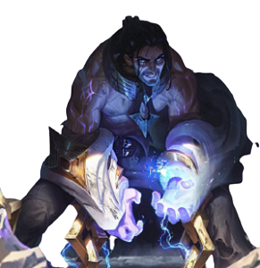

-

Sylas
Mágico
Descrição
Sylas o Abjugado, um revolucionário após conseguir escapar de sua execução com a ajuda de alguem da família Stemmaguarda e aplicar o seu golpe de estado, junto de outros magos oprimidos pelo reino acabou tomando o controle de Demacia sendo ele quem conduz o movimento contra a coroa, tendo nascido para ser um lider nato.
-
Gnar
Físico
Descrição
Gnar o Yordler Pré-Histórico, sendo possivelmente o unico sobrevivente de seu antigo bando após a longa tempestade causada por lissandra que causou a morte de seus antigos companheiros os yetis, criaturas místicas que durante sua vivencia com esse grupo o mesmo absorveu sua magia ancestral e se via como um desses monstros tendo a capacidade atualmente de se tornar uma das mais ferozes criaturas igual seus antigos companheiros.
-
Kha-zix
Misto

Descrição
Kha-zix o Caçador do vazio, após escapar de um dos turbulentos portais ligando o mundo real com o vazio o mesmo veio como uma criatura indefesa, se alimentando de pequenas larvas e insetos e absorvendo para seu corpo somente as qualidades perfeitas das criaturas sendo uma das criaturas mais versateis tanto no campo magico quanto combate fisico.